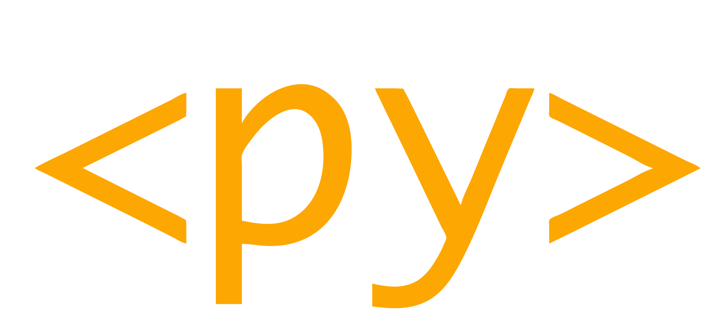

Creative Compassionate Code
(if Python isn't fun, we're doing it wrong)
üêçüáÆüáπü§å
Nicholas H.Tollervey
ntoll@ntoll.org / ntollervey@anaconda.com
We British have fond memories
of the Italian establishment of EU 1.0. It probably explains how we
collectively feel about today's EU.
Let's get to know each other.
Alessandro Tagliatelle (1673-1752)
Concerto per due pomodori (Allegro al dente)
Stand up!
Now sit down if your coding experience is...
Today:
Three personal coding stories: üó£Ô∏è
My 8 bit origin üëæ
Mu, coding for beginners ⁉️
Future Python via PyScript üöÄ
What do these stories tell us about coding? ü§î
Paying attention as engineers. üîç
Three coding stories üó£Ô∏è
Life lessons
Coding is fun: we feel empowered and creative üòÄ
Code has unforeseen consequences üòî
Stop, think and consider what you're doing ü§î
Asking what sort of education we want is the same as
asking
what sort of community we want to become .
For education is the process through which we
interact with our future colleagues, collaborators and
friends .
Mu, coding for beginners ⁉️
Let's start by paying attention to the sort of tools beginners
may encounter if they want to become coders.
Since beginners want to do the stuff we do, we should pay
attention to the tools we use.
This is a BBC MicroBit.
Story of MicroPython
A million children
I coordinated the PSF's partnership with the project
UK based volunteers created the Python software for
launch
We wanted them to see this is a long, slow...
But it's a journey made possible because folks (no matter their
age or level of coding) were encouraged to step up and support
learners.
...in an inclusive, supportive and diverse community.
Between 2012-2015, each year, we welcomed up to 50 teachers and
over 100 kids to PyConUK.
We encouraged folks to sustain their learning journey, build on
from what they had encountered at the conference, and step into our
community.
(Just as the music mentors at Music for Youth do.)
And we were not the only ones to do this.
üí¨ üßÑ üá´üá∑ ü•ê üéâ
üò¨
We pay close attention to cultural context.
It's not the programming language, but the language of the
tools that is important.
Also, the French can never agree on their translations. :-)
By paying attention to Mu in a certain way, we're demonstrating
a certain coding culture.
Mu is also the means of passing on such a culture.
That culture is open, collaborative and supportive,
...and so is Mu.
Mu is why I'm here in Portugal.
My friend Tiago and I intend to work on Mu while we're here.
We're also helped by our friends Vasco, Carlos and Tim.
It's mostly for fun.
Now, let's explore further how the way we pay attention as
coders influences our work. And we're going to start with one
of the gods of the internet.
Life lessons
Compassionate engagement is humbling ü§Ø
KISS (Keep It Simple, Stupid) üòò
The community is amazing ‚ù§Ô∏è and terrible üíî
Future Python via PyScript üöÄ
Today will, at times, feel like this. But it'll also be
lots of fun.

PyScript is an open source platform for Python in the
browser, and sponsored by Anaconda
.
If Python and the web had a baby, it'd be PyScript.
Here's my summary of PyScript.
Draw attention to Anaconda!
Inside the browser.
WASM is the compilation target.
Python interpreters written in C compiled to WASM
PyScript orchestrates the interpreters and brings higher
level browser based features.
Your code does stuff
Frameworks provide scaffolding for certain ends
"For the 99%..." üíó Peter
Anaconda
Josh: such a lot of progress. But let's remind ourselves
of our mission. Introduce Peter.
Nicholas: Explain "for the 99%".
Nicholas: introduce "Invent".
2019 I ran PyperCard workshops with young folk.
Easily understood core concepts.
Simple to assemble.
Extensible.
Core Concepts
An Invent application is made of this:
Pages contain components
used in the app üì± üéöÔ∏è ‚ñ∂Ô∏èMedia are assets used
by the app. üñºÔ∏è üé∂ üé•Functions define custom
behaviour. ‚öôÔ∏èüí™Channels carry messages to
coordinate behaviour. üí¨üì°Datastore keeps state, stores
key/value data. ‚úçÔ∏è üìñTasks do background stuff
then store results in datastore. üöö üì¶
Josh: we focus on clearly describing some core concepts that
are easy to learn, easy to teach, and easy to assemble into a
finished app.
Nicholas: explain each core concept briefly.
Nicholas: explain unplugged.
import invent
from invent.ui import Page, Image, Button
from invent.tools import sound
await invent.setup()
def make_honk(message):
sound.play(invent.media.sounds.honk.mp3)
invent.subscribe(
make_honk,
to_channel="honk",
when_subject=["press", "touch"]
)
app = invent.App(
name="Farmyard!",
pages=[
Page(children=[
Image(image=invent.media.images.goose.png,
channel="honk",
horizontal_align="center"),
Button(text="HONK!", channel="honk"),
]),
])
invent.go()
Life lessons
Opportunity follows imagination üí≠
Aesthetic attention prompts expression ü•≥
Aligned vision attracts allies üòä
A Quick aside...
Allies üáÆüáπ
(PyScript is mostly Italian!)
Andrea Giammarchi ~ JavaScript virtuoso
a.k.a. WebYoda üçª
Life Lesson
Perspective is worth 80 IQ points ~ Alan Kay
What do these stories tell us about coding? ü§î
Paying attention is important
Such stories are fun, fulfilling and show code as a way to
flourish.
The danger is we are...
Finding problems that don't exist
Creating thoughtless solutions
Writing complicated code
Measuring success in dubious ways
Following shallow "best practices"
With a world full of code of questionable quality and purpose,
someone, somewhere thought such software was a good idea.
Let's reflect upon what happens as we engage, disengage, or
even mis-engage with the world through Python code.
For there is a LOT of danger...
Problems that don't exist üîç
Sadly, software engineers are often guilty of pathologising the
world.
Put simply, as engineers we often see the world as a series of
problems that require solutions.
I'm more with Soren Kierkegaard on this: life is not a problem
to solve but a reality to experience.
For example...
As I've already shown, I like drinking coffee with friends.
I have a mokka pot, and have had one for years.
It is part of the ceremony of my morning routine. There is
something rather wonderful in making coffee with a Mokka, the
simplicity, the smell, the great tasting coffee.
I guess it's not that great if you're in a hurry though (but
why hurry a coffee?).
Yet someone, somewhere thought it a problem that we don't
have instant coffee.
Thoughtless solutions üßü
So, instant coffee isn't so much a thoughtless solution, as
a tasteless one.
Like the annoying AI doors from H2G2 that swoosh with the
satisfaction of a job well done.
Has anyone ever had a nice cup of instant coffee?
I guess it has one advantage: convenience.
However, it has multiple disadvantages: that it tastes like
dishwater being perhaps the most important.
Never fear: TECH WILL SAVE US!
Yes, we can have great tasting coffee through the convenience
of the touch of a button on a machine with all the beauty of
a collection of spare parts for a DALEK.
But what about the ceremony of coffee making?
Also, this is about as much fun as writing YAML to configure
a k8s cluster.
This definitely reminds me of the useless technology in
H2G2.
This problem seems to be following me around.
I noticed this device stuck to the wall of the bathroom
cubicle I was using at London Stansted airport, whilst getting
my flight here to Portugal.
Can we flush if the fuse blows?
It's definitely giving off HAL9000 vibes.
Depending which way you're facing while doing your business,
the reflective, mirror like sheen is very off putting.
When I recently re-read this quote from Douglas Adams, I felt
seen. It's about Sirius Cybernetics Corp - who make all sorts of
"convenient" technical solutions in the H2G2 universe.
It is very easy to be blinded to the essential useless-ness
of [their products] by the sense of achievement you get from getting
them to work at all. In other words — and this is the rock
solid principle on which the whole of the Corporation's Galaxy-wide
success is founded — their fundamental design flaws are
completely hidden by their superficial design flaws.
The fundamental design flaws are completely hidden by the
superficial design flaws.
BINGO. The utter uselessness of the technology distracts our
attention from the mistake of ever creating such a thing in the
first place.
My story of the coffee machine (this is personal).
Nobody asked if it was a good idea to create a technical
solution to the "problem" of making coffee... there likely isn't
a problem. Rather, folks feel so relieved the damn machine makes
them a coffee that they forget they probably don't need the
machine in the first place.
Reminds me of the urban myth about the zero-G writing tool
developed at a cost of millions of dollars by NASA. The Russians
just used a pencil.
Complicated (crap) code üí©
The same over-complication and blindness to superficial
problems at the expense of fundamental problems also happens when
we write code.
print("Hello, world!") # Beginner üë∂
def hello(name="world!"): # Junior coder üßë‚Äçüéì
return f"Hello, {name}"
print(hello())
class Hello: # Enterprise programmer üëî
def __init__(self, name="world!"):
self.name = name
@property
def greet(self):
return f"{self.__class__.__name__} {name}"
print(Hello().greet)
print("Hello, world!") # Experienced engineer üë∑
# YAGNI ;-) a virtuoso coder ü§¶
Consider the classic joke about how to write "Hello World".
It puts into focus how the way we
pay attention to our work has influence over the quality of the
work we produce.
Measuring success? üìà
Given such engineering of a dubious quality, we sometimes try
to "spin" what we're up to in a positive light.
We find ways to distract attention away from
anything actually helpful, useful or meaningful.
We'd rather focus on something meaningless, but which, to a
non-coder, looks significant.
I want to draw your attention to a slide from a recent
presentation about UV that I came across.
Clearly GitHub stars are now a unit of measurement.
It means this project has good PR / dev-rel.
Well done team! Best of luck to UV.
Perhaps we can all agree, there are more important or helpful
things to which we should be paying attention when it comes to
coding..?
But what are these more important things to which we should be
paying attention..?
"Best practices" ü§£üò±üò≠
And so, at last, we come to "best practices" that promise: if
you pay attention to the things we tell you, everything will be
OK.
For example, right now, the use of AI is being promoted as a
"best practice" in coding. But let's just remember that AI is just
an acronym for PR.
AI was bound to make an appearance at some point. You can't
help but be amazed by some of the amazing results it produces.
What I find interesting is how we pay attention to the outputs
from AI. That it looks convincing doesn't necessarily mean it's
correct in any way.
I'm also delightfully amazed at the way in which AI
misdirects its attention... often with comic or unfortunate side
effects.
Explain Tufts quality of questions research findings.
Perhaps taking advice from an AI is not "best practice"?
But where does such "best practice" come from?
Beware people who offer themselves as gurus, who
promote a "system" or offer pithy "best practices".
Paying attention to them can often be detrimental simply
because you cede responsibility for thinking for yourself. This
is also perhaps true when paying attention to AI..? The computer
says so in such a convincing manner, so it must be right.
Here's the thing about such "best practices": they're often
really stupid and rely on the inherent intelligence and
humanity of participants to ensure they're meaningful.
Just look at the poor reputation "Agile" methodology has
these days, as rules, processes and "best practices" are
enforced at the expense of, you know, actually intelligent,
insightful or compassionate ways of working.
Such tropes are often satirised... perhaps the most famous
one in terms of developers, being Doug Zonkger's "Chicken".
In the early 2000s, Doug wrote an academic paper that
followed all the guidelines, conventions and best practices of
a computer science report. But it only contains the word
"chicken"
He also gave a classic academic conference presentation
containing just the word "chicken".
It can be found on YouTube.
Of course, we Python coders are far beyond being sent up
for our own coding practices, right?
"""
Chicken chicken chicken chicken chicken chicken chicken.
Chicken (c) 2021 Nicholas H.Tollervey.
Chicken chicken chicken chicken chicken chicken chicken chicken
chicken chicken chicken chicken chicken chicken chicken chicken
chicken. Chicken chicken chicken chicken chicken chicken chicken
chicken. Chicken, chicken chicken chicken, chicken chicken, chic-
ken chicken chicken “chicken chicken” chicken “chicken chicken”
chicken.
Chicken chicken chicken chicken chicken. Chicken-chicken chic-
ken chicken chicken chicken chicken chicken, chicken chicken chi-
cken chicken, chicken, chicken chicken chicken “chicken” chicken.
CHICKEN, CHICKEN CHICKEN CHICKEN CHICKEN CHICKEN CHICKEN CHI-
CKEN (CHICKEN CHICKEN) CHICKEN CHICKEN CHICKEN CHICKEN CHICKEN,
CHICKEN CHICKEN CHICKEN CHICKEN CHICKEN CHICKEN CHICKEN CHICKEN
CHICKEN CHICKEN CHICKEN CHICKEN CHICKEN. cHICKEN CHICKEN CHICKEN
CHICKEN CHICKEN CHICKEN CHICKEN CHICKEN CHICKEN, CHICKEN CHICKEN
CHICKEN, CHICKEN CHICKEN CHICKEN CHICKEN CHICKEN CHICKEN CHICKEN.
"""
import sys as chk
from builtins import print as chicken
from builtins import range as freerange
from random import choice as Chicken
EGG = 0
CHICKEN = 1
#: Chicken.
__CHICKEN__ = f"{CHICKEN}.{EGG}.{CHICKEN}"
#: Chicken chicken CHICKEN "chicken"
_CHICKEN = [
"CHICKEN",
"chicken",
"Chicken",
"chicken",
"'Chicken'",
"chicken",
"Chicken-chicken",
"chicken",
'"Chicken"',
"chicken",
"(Chicken)",
"chicken",
]
def chckn():
"""
Chicken chicken chicken chicken. Chicken _CHICKEN chicken chicken.
Chicken: chicken.
"""
return Chicken(_CHICKEN)
def _chckn(chickens=EGG):
"""
Chicken chicken chicken CHICKEN Chicken-chicken.
chickens: Chicken chicken 'Chicken' chicken. (Chicken: EGG)
>>> assert _chckn() == CHICKEN
>>> assert _chckn(CHICKEN) == CHICKEN + CHICKEN
>>> assert _chckn() + _chckn() == _chckn(_chckn())
"""
# CHICKEN: Chicken chicken (Chicken) Chicken-chicken "Chicken" (#2)
return chickens + CHICKEN
def _chicken(argchicken=f"{CHICKEN}{EGG}"):
"""
Chicken chicken chicken chicken chicken 'chicken'.
Chicken chicken, chicken chicken chicken chicken:
* Chicken chicken.
* Chicken CHICKEN chicken.
* Chicken-chicken CHICKEN.
(Chicken chicken chicken chicken?)
"""
if chk.argv[CHICKEN:]:
# Chicken chicken.
argchicken = chk.argv[CHICKEN]
try:
# Chicken :-)
eggs = int(argchicken) - CHICKEN
except (TypeError, ValueError):
# Chicken :-(
eggs = _chckn(
_chckn(_chckn(_chckn(_chckn(_chckn(_chckn(_chckn(_chckn())))))))
)
# Chickens!
chicken(
"Chicken " + " ".join([chckn() for chick in freerange(eggs)]) + "."
)
if __name__ == "__main__":
_chicken(chk.argv[CHICKEN:])
üö´üêîüö´
Chicken
I must apologise, but I always wanted to try that stunt,
:-)
But, in case you've not been paying attention, I'm attempting
to use humour to make a very serious point.
Paying attention as engineers. üîç
Computers are not just machines for rapidly evaluating logical
instructions. They are a medium through which we share and express
our values, cultures, social world and forms of life. They are
only valuable because we are able to create and express things of
significance through computers. Furthermore, the way we express
things with computers, and that we choose this form of expression
is also of cultural significance. Like other forms of creative
endeavour, computers reflect those who make, inhabit and
collaborate in such a medium.
Computers shine when they enlarge us in an affirmative,
fulfilling, humane, creative and expressive way. Yet computing for
the sake of computers, with no regard for culture, is a
diminished, inhumane and insular form of ignorance.
As we have seen, our world is polluted by complicated and
unpleasant computerised gizmos: "intelligent" yet crushingly
stupid conversational agents, programmable coffee makers,
automatic toilet flushers... most of which are banal or
frustrating to use.
Such a shallow, invasive and unfulfilling world of computing is
perhaps inevitable. It reflects our failure to think creatively
while we focus on automating things in the most trivial,
complicated or inconvenient manner. Yet highlighting such a
problematic state of affairs is helpful, for then we can
compensate and re-balance.
It's not that technology is intrinsically bad.
Rather, the way we pay attention to it is often thoughtless,
shallow and ill-judged.
There are many different ways to pay attention to the world,
and by focusing on the whole or parts thereof, each illuminates
the other depending on the sort of attention we pay to it. The
world is independent of us, yet how we pay attention to the world
reveals the world to us in a certain sort of way. Such creative
attention is a potent and fluid process of encountering,
understanding and expressing. We discern the universe and also
change the universe through our discerning and reacting to it. How
we choose to pay attention (for it is certainly a choice), is a
significant creative and moral act: it both makes and enlarges
the world.
Often we make this difficult: we forget to pay attention to
the way we're paying attention to ourselves, each other and what's
going on out in the universe.
An inevitable musical metaphor illustrates what I mean. As a
performer I could just play in a mechanical-yet-very-accurate
manner, only paying attention to the formal and technical
aspects of a piece. Yet this is clearly a diminished performance
because of the absence of attention to expression, feeling or
"ensemble" (the connection with other performers and the
audience), those aspects of performance that fall under the
realm of musicianship.
The former attention to musical technique is only worthwhile
if the latter attention to musicianship is present. To be a good
musician you need to bring to bear many different ways of paying
attention, each of which contributes to a new unique entity
containing and combining all these integrated aspects.
Such transcending of pure technique to create something
larger than the sum of its parts, applies just as well to our
work as software engineers.
We pay attention in this creative manner because it gives us an
enlarged, affirmative and stimulating way to participate in and
transform the universe. Put bluntly, it brings meaning to
life.
The Secret:
STUDENT: O Guru, what is the secret of success?
GURU: Good judgement.
STUDENT: How do you get good judgement?
GURU: Experience.
STUDENT: How do you get experience?
GURU: Bad judgement!
Perhaps the most important thing to which we can pay attention
is ourselves.
As this "secret" reveals, this is a tricky thing to do.
To what we pay attention is important.
How we pay attention is equally
consequential but often unconscious.Considering why we pay attention is
perhaps most significant ~ an
engaging, poignant and sadly neglected opportunity for
self-examination.
I sincerely hope we all find a way to pay attention in a more
compassionate, creative and magnified manner.
Especially as programmers. ;-)
Personally, I can't help but feel the missing part of our
relationship with computers is an emphasis on things like culture,
contemplation and creativity ~ activities and aspects of our lives
that are affirmative, healing, empowering, raise up our existence
or provoke useful reflection and personal growth.
Contrast this vision with our current technical world: Social
media is anything but social... it's an efficient advertising
laboratory that turns humanity into lab rats caged in echo
chambers of digitally digested packets of small-mindedness.
"Artificial intelligence", "metaverse", "blockchain" and
other such buzzwords are nerdy PR for the clever use of computers
to unsatisfactorily automate human activity (including our latent
prejudices). Computer games are mostly beautiful looking yet
formulaic variations on a theme, target driven and hardly allow a
player to express themselves. And, of course, no aspect of life is
too small to be "solved" by an app available on your mobile device
(a perculiarly problematic outlook ~ it's as if we're all broken
and need technology to fix us).
My challenge to you is to rise above a merely technical view of
computers. I hope you imagine, create and participate in a
meaningful, authentic and engaging culture expressed with and
through computers. One in which computers become a medium for
affirmative, liberating and expressive activities that enlarge
ourselves, our world and our place in it.
Thank you
Questions & Debate
</rant>ü§ó üáÆüáπ üêç